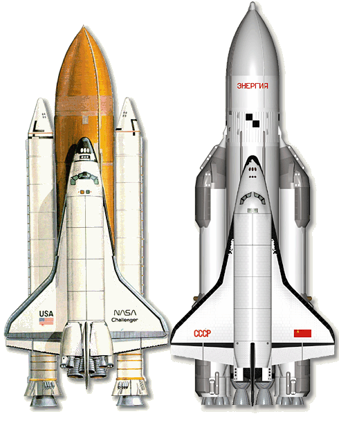

Menu
Historia Lotów Kosmicznych
Na tej stronie poznasz wspaniałą opowieść o rozwoju ludzkości i przełomach technologicznych, które towarzyszą światu już prawie 100 lat.
Czytając moje artykuł poznasz ciekawostki
i wiedzę, jakiej nie znajdziesz nigdzie indziej!
Strona wykonana przez: Mariusz Karczykowski